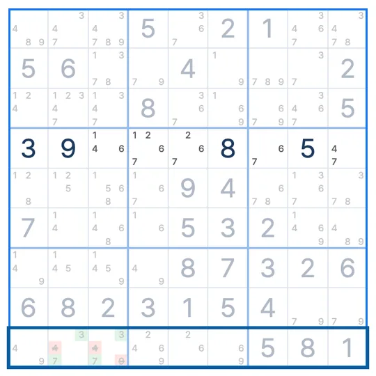

SUDOKU TECHNIQUE · 3단계 서브셋
히든 페어
Hidden Pair
히든 페어(Hidden Pair)는 한 줄이나 박스 안에서 두 숫자가 똑같은 두 칸에만 들어갈 수 있을 때, 그 두 칸의 나머지 후보를 지우는 스도쿠 기법이에요.
- 보는 곳
- 한 줄이나 박스
- 찾는 것
- 두 칸에만 나오는 두 숫자
- 지우는 것
- 그 두 칸의 다른 후보
히든 페어 모양
7행만 본 그림이에요. 7행에서 2와 8이 갈 수 있는 칸은 3열과 7열 두 곳뿐이에요. 두 칸에는 다른 후보도 섞여 있어서 숨어 있는 페어, 히든 페어라고 불러요.
왜 지울 수 있나요?
7행에는 2가 반드시 하나 들어가야 하고, 갈 곳은 3열이나 7열뿐이에요. 8도 마찬가지예요. 그러면 3열과 7열은 2와 8을 하나씩 나눠 가져야 해요.
두 칸이 2와 8로 정해져 있으니 다른 숫자가 들어갈 자리가 없어요. 그래서 3열의 1·4, 7열의 5·9를 지워요. 지우고 나면 두 칸은 후보가 2·8뿐인 네이키드 페어가 돼요.
히든 페어 찾는 순서
- 줄이나 박스 하나를 정하고, 두 칸에만 나오는 숫자를 찾아요.
- 똑같은 두 칸에만 나오는 숫자가 하나 더 있는지 봐요.
- 있으면 그 두 칸의 다른 후보를 모두 지워요.
히든 페어 레슨 받기
스도쿠 리그의 기법 레슨을 체험해보세요.
불러오는 중이에요
자주 헷갈리는 점
두 숫자 중 하나가 세 칸에 나오면요?
히든 페어가 아니에요. 두 숫자 모두 똑같은 두 칸에만 나와야 해요.
줄 말고 박스에서도 되나요?
네. 행, 열, 박스 어디서든 같은 원리예요.
네이키드 페어보다 찾기 어려운 이유는요?
두 칸에 다른 후보가 섞여 있어서 눈에 잘 안 띄어요. 칸이 아니라 숫자 쪽에서 "이 숫자는 어디에 갈 수 있지?"를 물어보면 찾기 쉬워요.
비슷한 기법
스도쿠 리그 앱에서
막히면 힌트가 히든 페어를 보여줘요
풀다가 막혀 힌트를 누르면, 지금 판의 히든 페어 두 칸과 지울 후보를 보드 위에 표시해 줘요. 기법 연습에서는 실제 문제 위에서 히든 페어 수업을 들을 수 있어요. 첫 판에서 모양과 이유를 같이 보고, 다음 판에서는 직접 찾아봐요.

EVENT · SUDOKU LEAGUE PREMIUM
1개월 무료
무제한 힌트 · 리플레이 · 테마 팩 6종 · 기법 연습
쿠폰 받으러 가기 ▸수량